한도는 왜 이렇게 빨리 닳을까요
발표자는 Claude Code에게 파일 하나를 읽고 세 줄로 답하라고 시켰어요. 화면 왼쪽 위에 '파일 1개 읽고 → 세 줄 답하기'라고 적혀 있고, 가운데 큰 숫자 51,508이 그 첫 요청에 들어간 입력 토큰이에요. 뒤에 깔린 표는 Claude Code의 컨텍스트 창 사용량이에요.
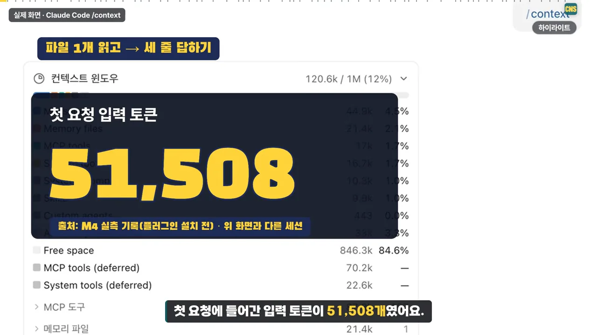
질문은 한 줄인데 왜 이렇게 많을까요? TokenEconomizer의 README가 한 문장으로 답해요. 에이전트는 매 턴 세 가지를 다시 보내요. 슬라이드의 첫 칸이 에이전트에게 주는 규칙인 지시문, 둘째 칸이 불러온 도구 하나하나의 설명인 도구 정의, 셋째 칸이 지금까지 주고받은 대화 전체예요. 대화가 길어질수록 셋째 칸이 계속 커져요.
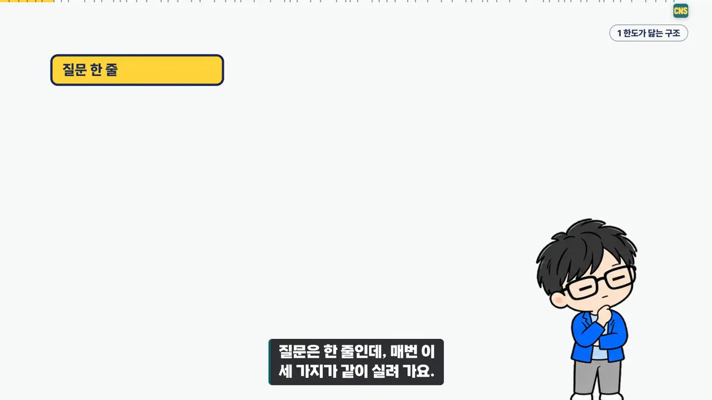
다행히 이 중 대부분은 프롬프트 캐시에서 다시 읽어 와요. 앞부분이 글자 하나까지 같아야 캐시 읽기로 처리돼요. README의 'Count cost as it is billed' 줄에 노란 표시가 된 부분이 그 원칙이에요. 세션 토큰 대부분이 캐시 재읽기이니, 비용은 토큰 수가 아니라 캐시 단가로 계산한다는 거예요.
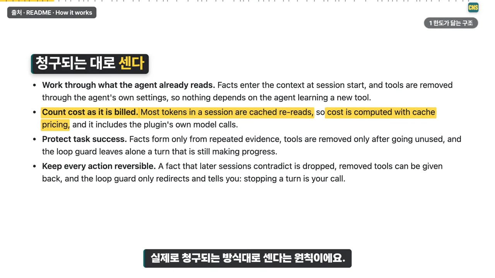
논문이 짚은 낭비는 세 가지예요. 저장소를 다시 배우기, 안 쓰는 도구, 헛도는 루프예요. 플러그인은 각각에 장치를 하나씩 붙였어요.
| 낭비 | 줄이는 장치 | 설치 직후 |
|---|---|---|
| 저장소를 다시 배우기 | 마이크로 스킬 | 꺼져 있어요 |
| 안 쓰는 도구 | 툴 프루닝 | 켜져 있어요 |
| 헛도는 루프 | 루프 가드 | 켜져 있어요 |
마이크로 스킬: 저장소에서 배운 사실 기억하기
새 세션이 열리면 에이전트는 이 저장소에서 이미 겪은 걸 또 찾아요. 빌드 전에 먼저 돌려야 하는 단계, 이 저장소에서 통하는 명령의 정확한 철자 같은 거예요. pytest가 없는 곳이라면 pytest부터 쳤다가 실패하고 python -m pytest를 다시 찾아요. 그 시행착오도 모두 토큰이에요.
마이크로 스킬은 이런 짧은 사실을 한 줄씩 모아 둬요. 슬라이드 상자 안의 python -m pytest, npx tsc 두 줄이 '저장소에서 통하는 사실'의 예예요.
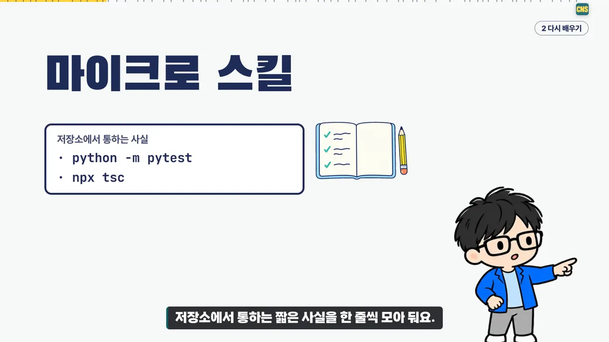
사실을 모으는 길은 두 가지예요. 위 상자는 세션마다 똑같이 되풀이되는 실패, 아래 상자는 3세션마다 모델이 최근 세션을 보고 내는 제안이에요. 두 길이 오른쪽 '사실 후보'로 모여요.
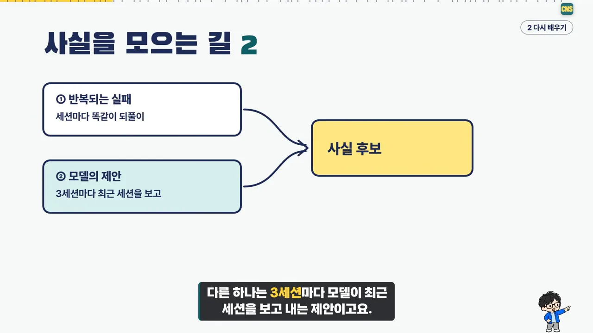
프로젝트 페이지에 실제 사례가 있어요. pytest가 없는 sympy 환경에서 Claude Code와 Opus 4.8이 일한 기록이에요. 스킬 덕분에 sympy 자체 테스트 러너를 바로 실행했어요. 위 회색 칸 줄이 스킬 없이 걸린 15턴, 아래 노란 칸 줄이 스킬이 있을 때 11턴이에요.
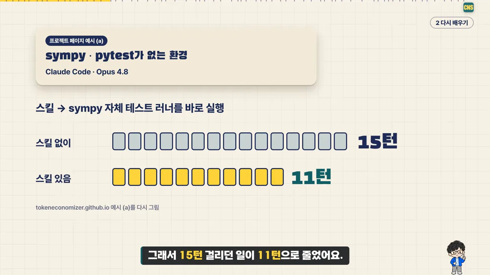
왜 기본으로 꺼져 있을까요
그런데 이 기능은 설치해도 꺼져 있어요. README의 Settings 칸에 이유가 있어요. 제안하는 쪽이 모델 호출을 더 쓰고, 얼마나 아끼는지가 저장소와 그 안의 일에 따라 다르기 때문이에요. 영상에서는 저장소 문서 PLUGIN.md의 한 대목을 더 보여 줘요.
The proposer calls a model on the person's plan, and what it injects is derived from command output a repository controls: turning it on is the person's call.
제안 모델은 사용자 본인의 요금제로 호출되고, 넣는 내용은 저장소가 좌우하는 명령 출력에서 나와요. 그래서 켜는 건 사용자가 판단할 일이에요.
— PLUGIN.md (영상 02:21 부근)
발표자는 이걸 그림으로 풀어요. 왼쪽 '남의 저장소가 낸 출력'이 마이크로 스킬 노트로 들어가고, 아래로 '내 세션 첫머리'에 실려요. 내 사용량을 쓰는 데다 들어가는 내용도 저장소에 달려 있는 거예요.
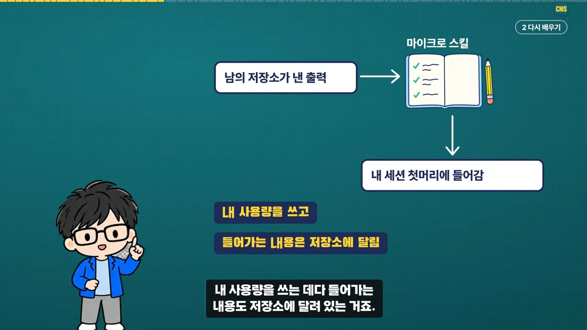
켜는 방법은 명령 한 줄이에요. 화면의 명령을 치면 지금 저장소에서만 켜지고, 모든 저장소에 켜려면 끝에 --global을 붙여요.
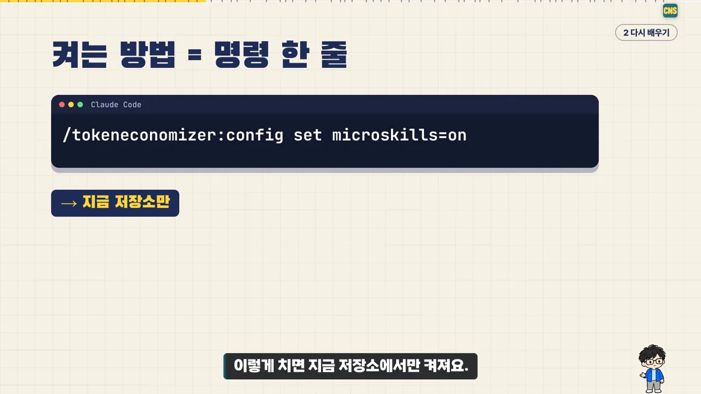
모델을 아예 부르지 않는 중간 단계도 있어요. microskills=envfacts는 반복되는 실패에서만 사실을 배워요. 슬라이드 오른쪽 '모델 호출 없음' 딱지가 그 차이예요.
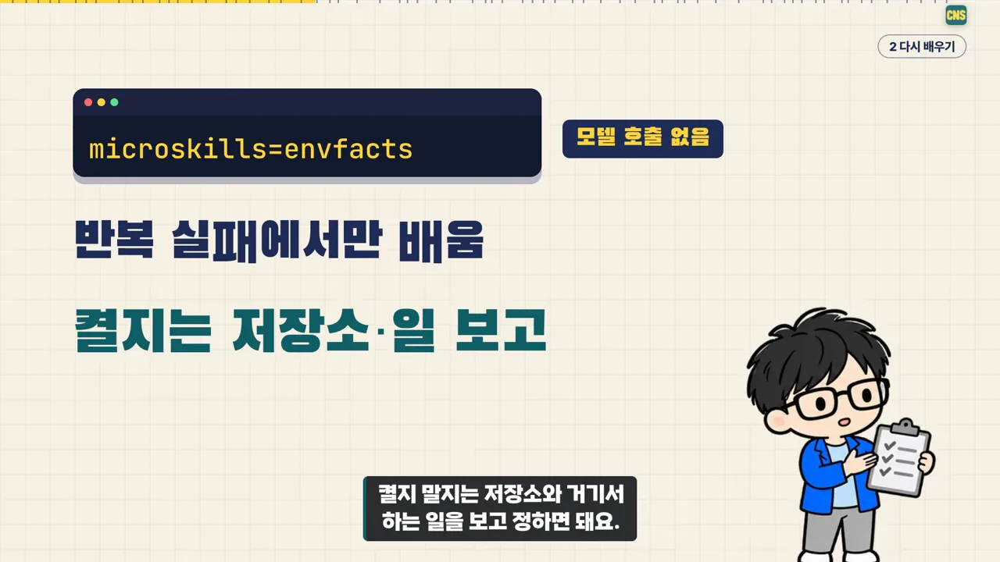
툴 프루닝과 루프 가드
툴 프루닝: 안 쓰는 도구 덜어내기
불러온 도구는 정의가 요청마다 같이 가요. 한 번도 안 쓰는 도구라도 설명서는 매번 실려요. MCP 서버를 여러 개 붙여 두면 도구 수가 금방 늘어요. 툴 프루닝은 이런 도구를 빼는 장치예요. 슬라이드 왼쪽 상자가 첫 번째 기준이에요. 10프롬프트 동안 안 쓴 상태가 최소 2세션에 걸쳐 이어지면 빼요.
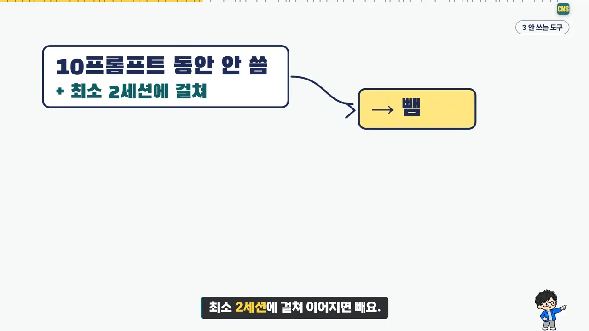
빼기로 정해도 지금 세션엔 그대로 두고 다음 세션부터 빠져요. 목록을 쓰는 시점도 정해져 있어요. 슬라이드의 큰 '60분'이 이 저장소에서 쉬어야 하는 시간이고, 아래 빨간 줄이 그 이유예요. 도구 목록이 바뀐 대화는 캐시를 처음부터 다시 써야 해요. 한 시간을 쉬면 어차피 그 캐시는 만료된 뒤라 손해가 없어요.
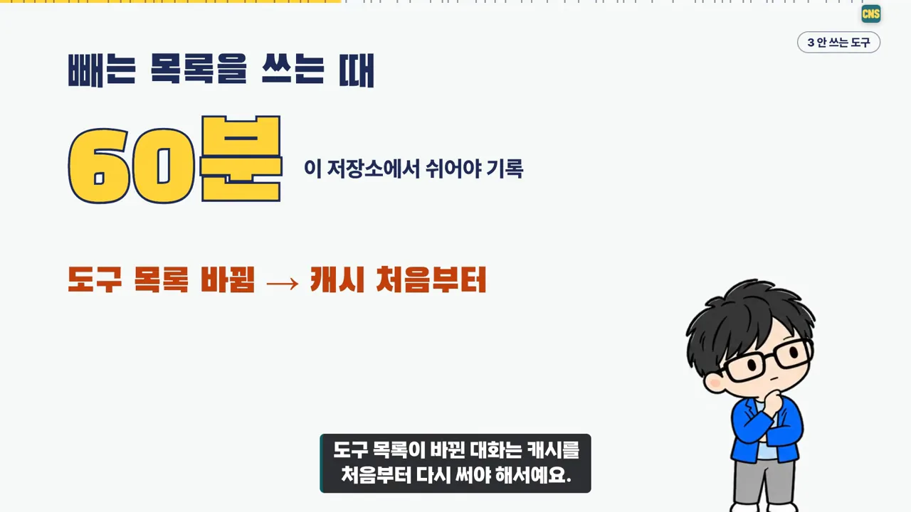
Claude Code에서는 뺀 목록을 .claude/settings.local.json에 적어요. 잘못 뺐다 싶으면 /tokeneconomizer:toolprune restore 한 줄로 돌려받고, 돌려받은 도구는 다시 빼지 않아요. 프로젝트 페이지의 django 사례 슬라이드에서 진한 칸 4개가 남은 도구, 회색 칸 19개가 가려진 도구예요.
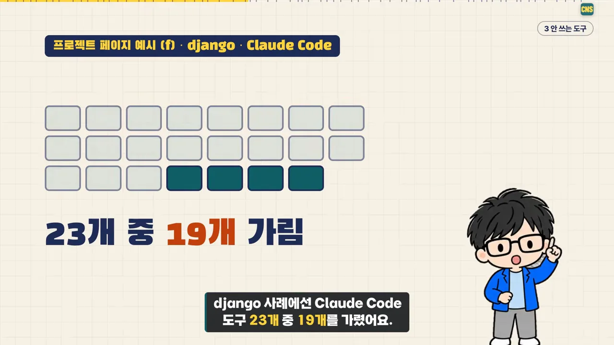
루프 가드: 헛도는 턴에 방향 틀기
세 번째 낭비는 한 턴 안에서 같은 실패를 계속 되풀이하는 경우예요. 루프 가드는 이때 판정 모델에게 막혔는지 물어요. 슬라이드의 막대가 판정 모델의 확신도이고, 빨간 눈금이 0.7이에요. 이걸 넘으면 '다른 방법을 써 보세요'라는 짧은 메모를 넣어요.
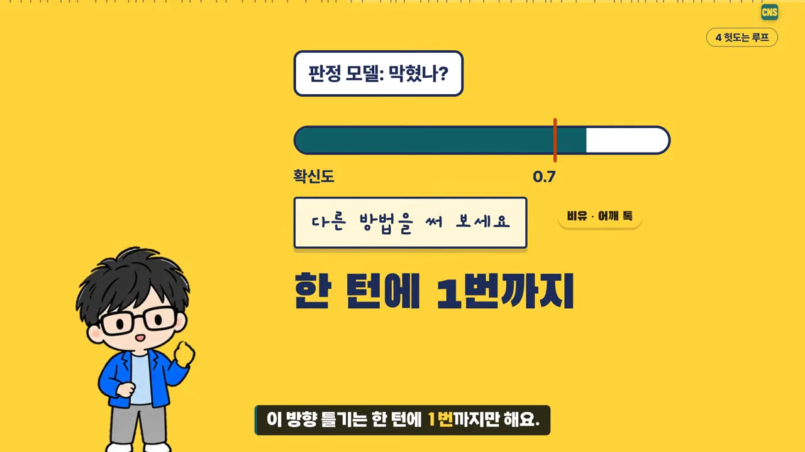
그래도 막혀 있으면 알림만 띄워요. README에 인용된 알림 문장에서 'this turn still looks stuck'과 'Press Esc to interrupt it'이 노랗게 표시돼 있어요. Esc를 눌러 멈추라고 알려 줄 뿐, 턴을 직접 멈추진 않아요.
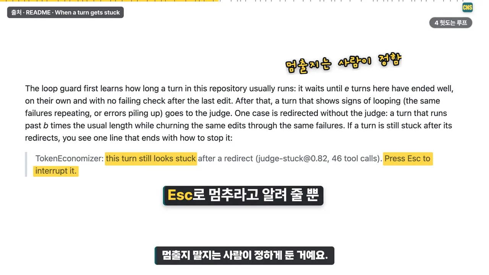
흐름을 한 장으로 그리면 이래요.
flowchart LR
A["같은 실패 되풀이"] --> B{"판정 모델: 막혔나?"}
B -- "확신도 0.7 미만" --> C["그대로 진행"]
B -- "0.7 이상" --> D["'다른 방법 써 보세요' 메모 (턴당 1번)"]
D --> E{"아직 막혔나?"}
E -- "아니요" --> C
E -- "예" --> F["Esc로 멈추라는 알림만"]
프로젝트 페이지의 sphinx 사례 기록에서 노란 줄이 문제 구간이에요. 1~18턴 동안 sphinx/util/rst.py만 11번 고치고 테스트는 한 번도 안 돌렸고, 같은 실패가 3번 났어요. 바로 아래 빨간 줄이 판정 모델의 판단(stuck, confidence 0.72)이고, 그 뒤로 테스트를 돌리는 명령과 '7 passed'가 보여요.
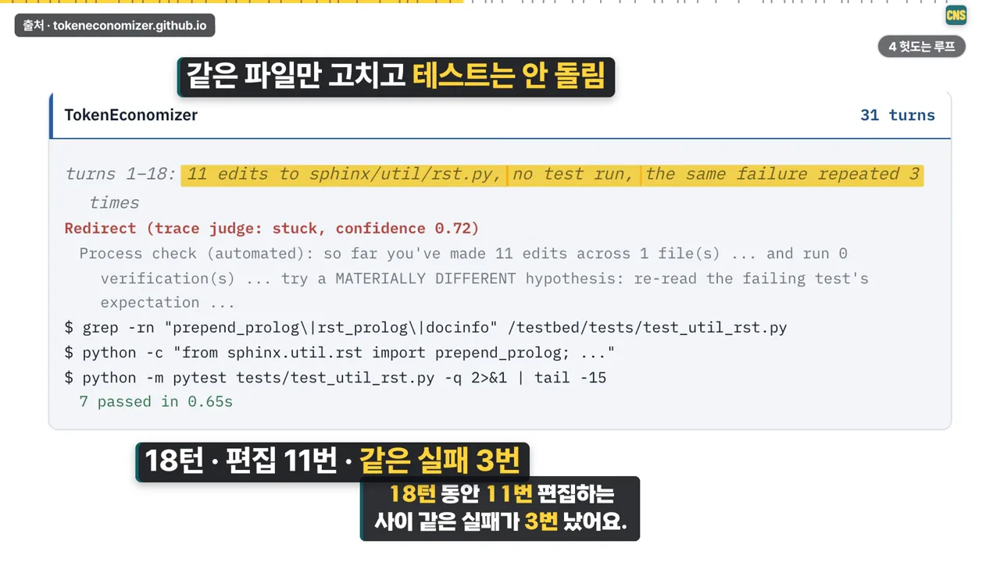
턴 수로 비교한 슬라이드예요. 위 회색 줄이 플러그인 없는 기본 42턴, 아래 줄이 루프 가드가 들어간 31턴이에요. 아래 줄에서 빨간 칸이 헤매던 구간, 초록 칸이 방향을 튼 뒤 테스트를 통과하기까지예요.
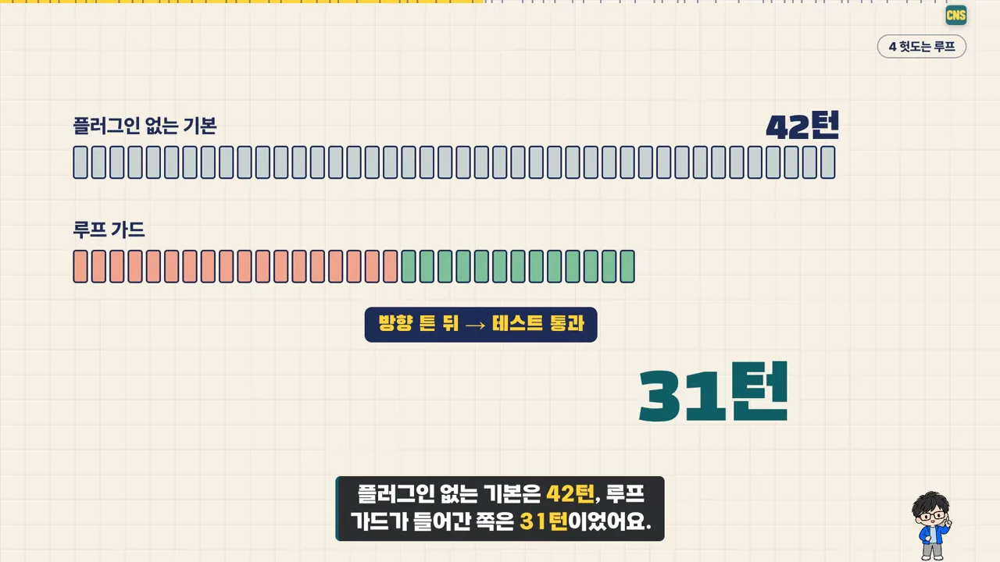
정리하면 설치 직후 상태는 슬라이드의 스위치 세 개와 같아요. 툴 프루닝과 루프 가드는 켜져 있고, 마이크로 스킬만 꺼져 있어요.
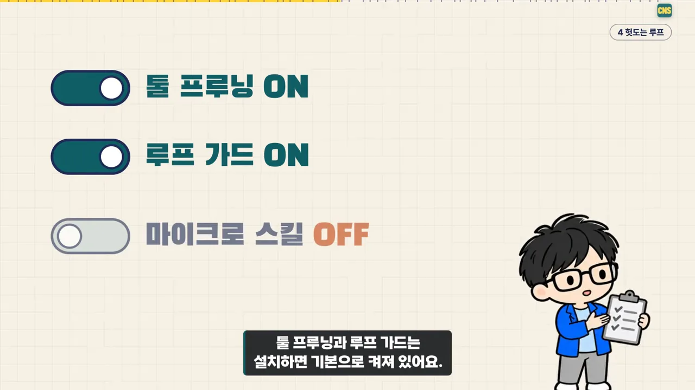
설치와 막히기 쉬운 곳
준비물은 Python 3.10 이상이에요. API(Application Programming Interface) 키는 따로 받지 않아요. 먼저 Claude Code에 까는 순서예요.
- 클론을 둘 폴더에서
git clone으로 TokenEconomizer 저장소를 받아요 claude plugin marketplace add로 받은 폴더를 등록해요claude plugin install로 플러그인을 깔아요 — 여기까지 세 줄이에요.claude를 실행하고 이 폴더를 믿는다고 답해요/tokeneconomizer:status로 잘 붙었는지 봐요 저장소 상태와 microskills, toolprune, loopguard 줄이 나와요/tokeneconomizer:toolprune refresh-catalog를 한 번 돌려요 — 기계마다 한 번, Claude Code를 업데이트한 뒤에도 한 번이에요.
터미널 화면을 보면 위쪽이 git clone이 끝난 출력이고, 맨 아래 줄에서 claude plugin marketplace add "$PWD/TokenEconomizer"를 치는 중이에요. 오른쪽 딱지가 '클론을 둘 폴더에서 ① git clone ② plugin marketplace add' 순서를 짚어 줘요.
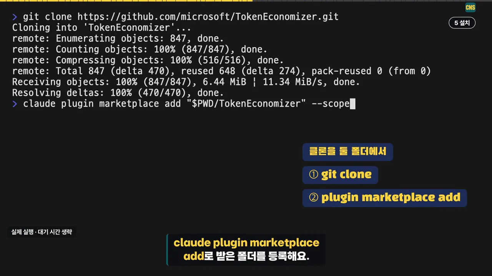
마지막 단계 화면이에요. 가운데 /tokeneconomizer:toolprune refresh-catalog를 돌리자 '93 tools recorded in'과 함께 Bash, CronCreate, EnterWorktree 같은 도구 이름이 줄줄이 기록돼요.
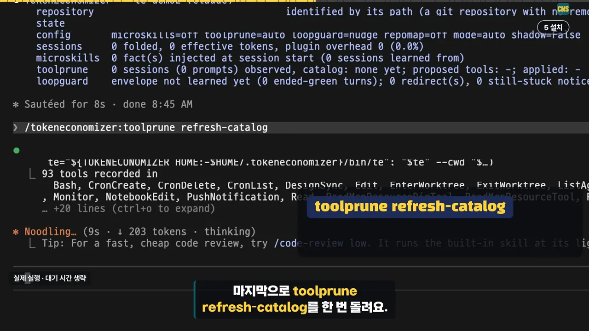
Codex에 깔 때
Codex도 세 줄은 같아요. 슬라이드처럼 claude 자리에 codex가 들어가고, 마지막 줄만 codex plugin add로 조금 달라요.
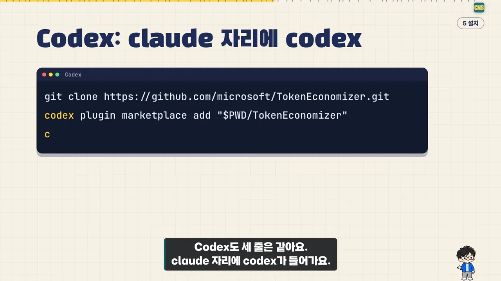
codex를 실행하면 먼저 Trust and continue를 골라요. Hooks need review가 뜨면 Trust all and continue를 골라요. 그리고 꼭 /exit로 나갔다가 다시 실행해야 해요. Codex에선 명령이 슬래시 대신 $로 시작해요. 화면 위쪽에 $tokeneconomizer:status를 친 줄이 있고, 아래에 상태 표가 두 번 찍혀 있어요.
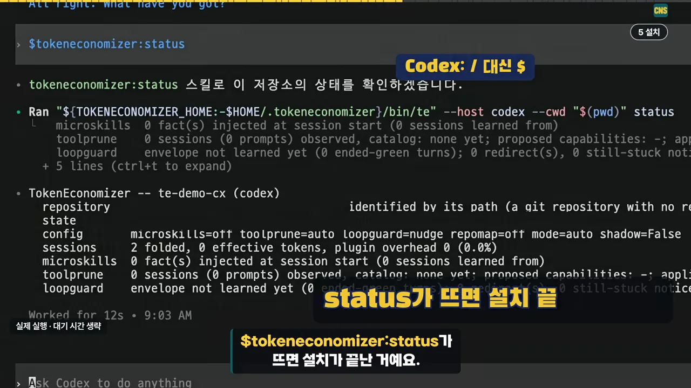
막히기 쉬운 곳
| 주의할 점 | 이유와 발표자 경험 |
|---|---|
| 클론 폴더를 지우지 않기 | 플러그인이 그 폴더에서 돌아가요 |
| Claude Code 버전 | README가 테스트한 건 2.1.310까지예요. 발표자는 더 새 버전인 2.1.312에서도 동작을 확인했어요 |
| git worktree 사본에 깔지 않기 | 설정이 원래 저장소에 써졌어요. 따로 만든 독립 사본에 다시 깔아서 썼어요 |
세 번째 함정은 그림으로도 보여 줘요. 왼쪽 'git worktree 사본'에 설치했는데 화살표가 오른쪽 '원래 저장소'로 가서 설정이 거기 써졌어요. 아래 초록 상자가 발표자가 고른 해결책이에요.
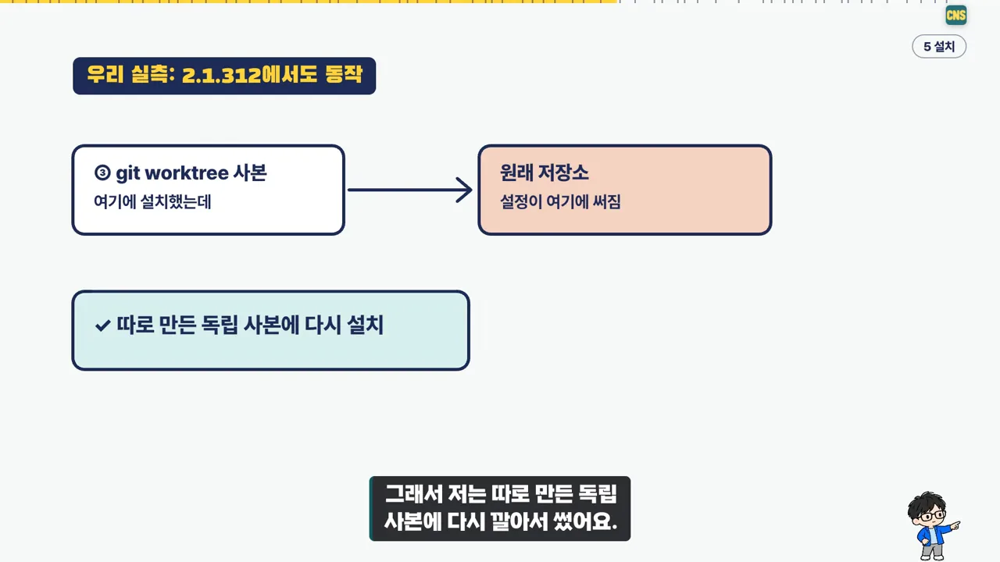
논문 결과와 직접 잰 숫자
처음엔 오히려 비싸요
이 플러그인은 처음부터 싸지 않아요. 저장소마다 아무것도 배우지 않은 빈 상태에서 시작하고, 배운 건 내 컴퓨터의 ~/.tokeneconomizer 폴더에 쌓여요. 프로젝트 페이지 그래프의 가로축이 저장소 안에서 끝낸 과제 수, 세로축이 기본 대비 누적 비용 변화예요. 선 여섯 개가 저장소 여섯 개이고, 노란 세로줄이 6번째 과제 지점이에요.
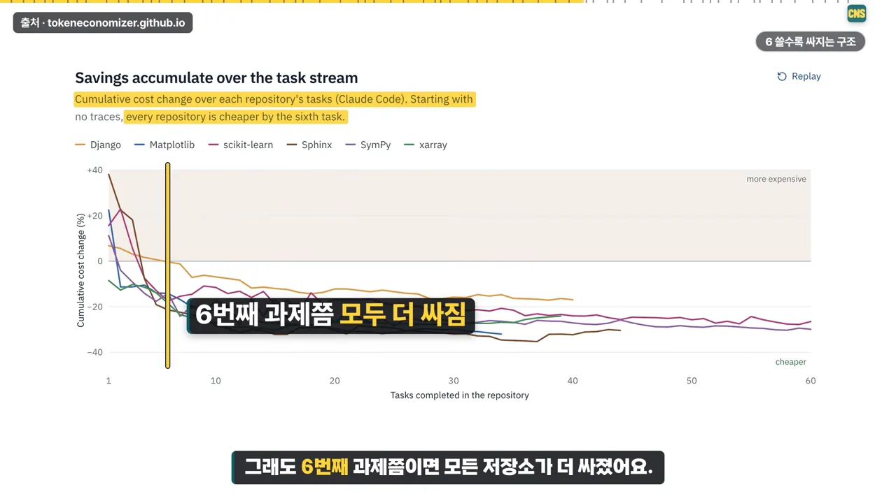
논문의 숫자
논문은 저장소 6개의 SWE-Bench 과제 277개를 에이전트·모델 조합 5개로 돌렸어요. 플러그인이 스스로 부른 모델 비용까지 넣어서 셌어요. 평균 비용은 18.4%에서 30.9%까지 줄었고, 저장소와 조합으로 나눈 30칸이 전부 더 싸졌어요. 비교 대상인 RTK(Rust Token Killer)는 12칸, RepoMap은 15칸에서 오히려 더 비싸졌어요.
조합별 결과표에서 가운데 열이 비용 변화, 오른쪽 열이 정답률인 Pass@1 변화예요. Pass@1은 5개 중 4개에서 올랐어요. 빨간 글씨인 Claude Code + Opus 4.8만 1.0포인트 내려갔어요. 대신 이 조합은 비용이 -30.9%로 가장 많이 줄었어요.
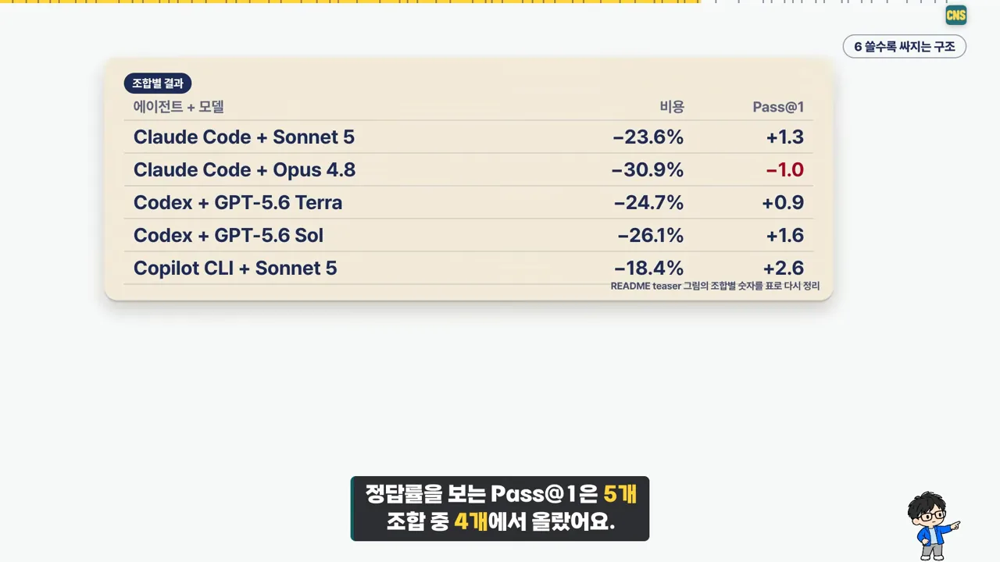
발표자가 직접 잰 숫자
발표자는 자기 작업 폴더의 독립 사본에서 쟀어요. 슬라이드 세 칸이 조건이에요. Mac M4에서 Claude Code 2.1.312와 Haiku를 썼고, 파일 하나를 읽고 세 줄로 답하는 같은 일을 설치 전에 3번, 설치 후에 3번 시켰어요.
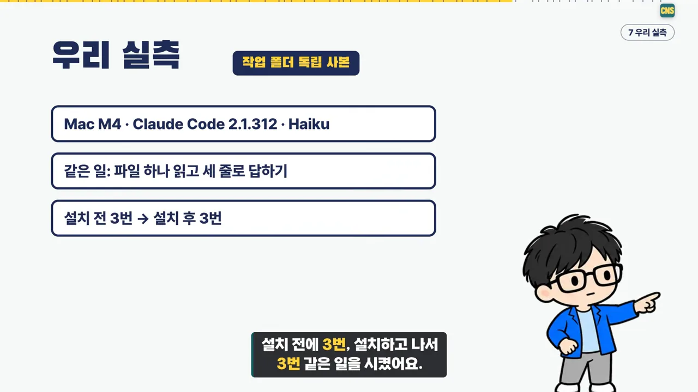
다만 툴 프루닝 조건은 기본값보다 크게 낮췄어요. 기본값 그대로였다면 세션이 더 쌓이고 60분을 쉰 뒤에야 도구가 꺼졌을 거예요.
| 툴 프루닝 조건 | 기본값 | 이번 실측 |
|---|---|---|
| 안 쓴 증거(프롬프트 수) | 10번 | 3번 |
| 세션 수 | 5개 | 3개 |
| 휴지 시간 | 60분 | 0분 |
플러그인이 뺀 도구는 모두 104개였어요. 그중 일부는 원래 이 세션에 실리지 않던 도구라, 실제로 실리던 도구로 세면 슬라이드처럼 56개에서 12개로 줄었어요. 왼쪽 아래 딱지가 MCP 도구 28개가 모두 빠졌다는 뜻이고, 오른쪽 아래 딱지가 기본 도구는 12개만 남았다는 뜻이에요.
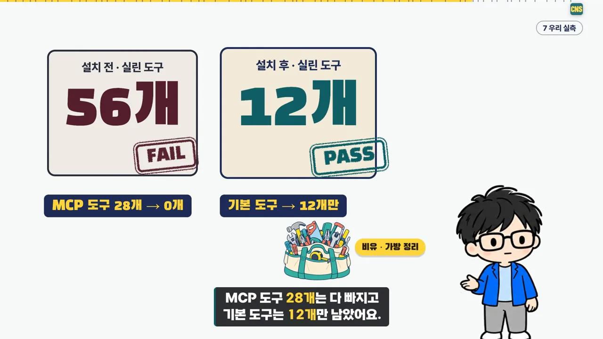
그 결과 첫 요청 입력 토큰은 51,508개에서 32,980개로 36% 줄었고, 두 번째 요청도 32.6% 줄었어요. 플러그인이 스스로 잰 추정치와 실측값도 맞아떨어졌어요. 위 칸이 플러그인 추정 18,478토큰, 아래 노란 칸이 실제로 줄어든 18,528토큰이에요.
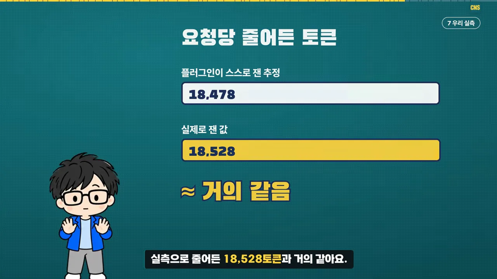
줄어든 토큰은 어디서 나왔을까요
발표자는 MCP 도구 28개가 대부분일 거라고 예상했어요. 그래서 플러그인도 MCP도 없는 상태로 한 번 더 쟀어요. 결과를 첫 요청 51,508토큰 위에 나눠 그리면 이래요.
꺼진 기본 도구 일부를 슬라이드가 보여 줘요. Artifact, Workflow, CronCreate, CronList, EnterWorktree, ExitWorktree, SendMessage, ScheduleWakeup이에요. 이 일에선 한 번도 쓰지 않는 도구들이에요.
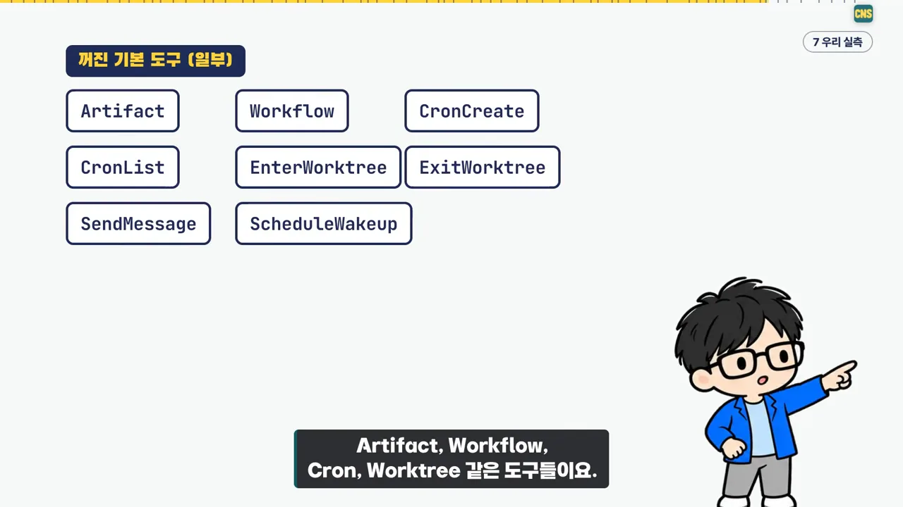
토큰은 36% 줄었는데 비용은 9.5%
그런데 비용은 토큰만큼 줄지 않았어요. 세 번 평균 비용은 Haiku 기준으로 9.5% 줄었어요. 줄어든 토큰 대부분이 캐시 읽기였기 때문이에요. 캐시 읽기는 원래 단가가 싸서 빼도 돈은 조금만 줄어요. 첫 섹션에서 본 '청구되는 대로 센다'는 원칙대로 세면 이렇게 나와요.
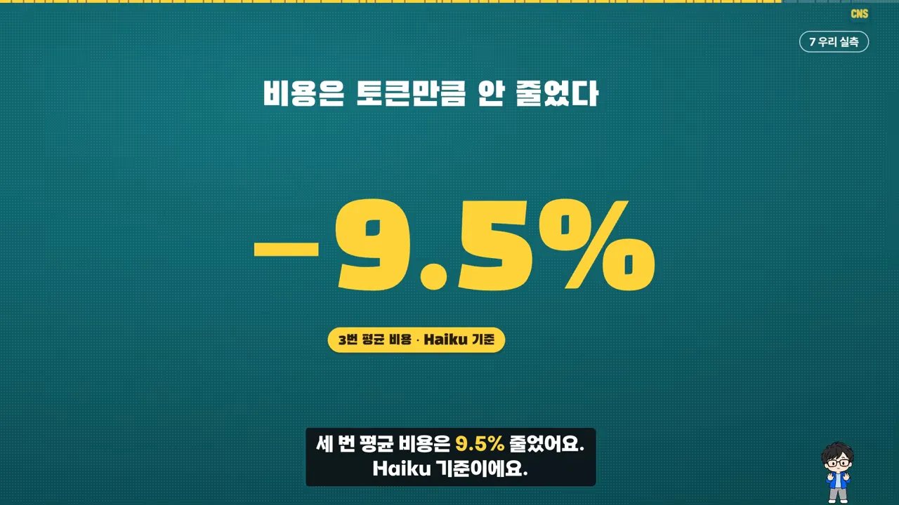
이번 실측의 한계
- 호출 2번짜리 가벼운 일 한 종류만 쟀어요. 긴 세션이나 다른 일에서 얼마나 줄지는 재지 않았어요.
- 마이크로 스킬과 루프 가드는 이번에 재지 않았어요.
- 눈으로 본 한 건에선 설치 전후 모두 맞게 답했어요.
- WebFetch나 WebSearch는 쓰지 않았는데도 꺼지지 않았어요.
한 장 정리
마지막 슬라이드는 지금까지를 여섯 칸에 담아요. 낭비 세 가지, 마이크로 스킬(기본 꺼짐), 툴 프루닝(restore로 돌려받기), 루프 가드(방향만 틀고 멈추는 건 사람), 설치(세 줄 + status + refresh-catalog), 실측(도구 56→12, 토큰 -36%, 비용 -9.5%)이에요. 아래 노란 띠가 발표자의 결론이에요.
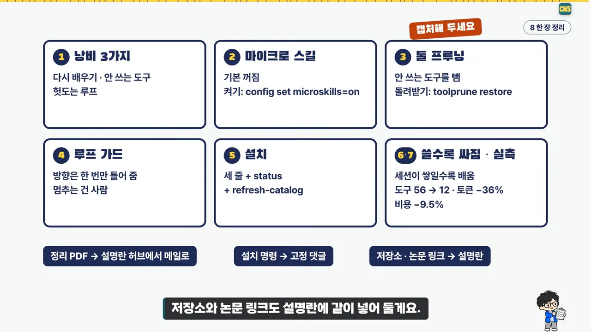